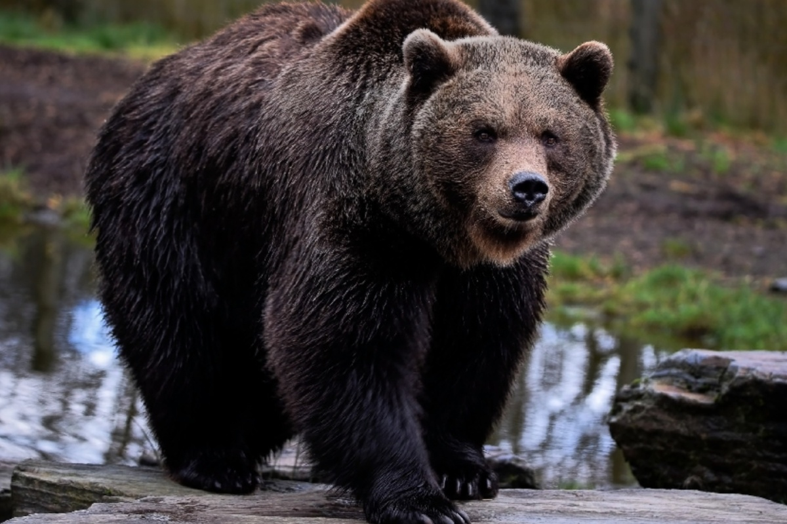
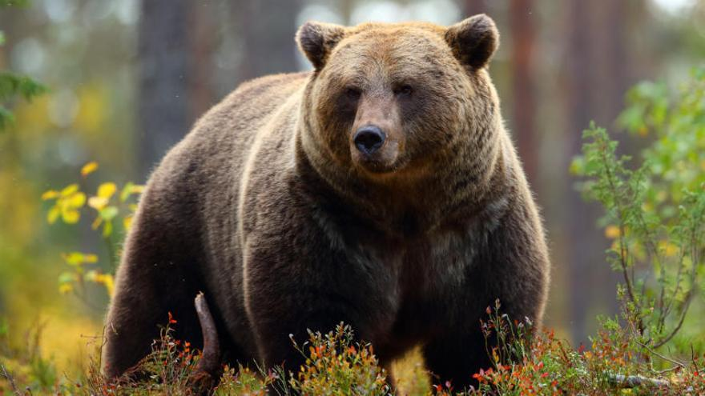
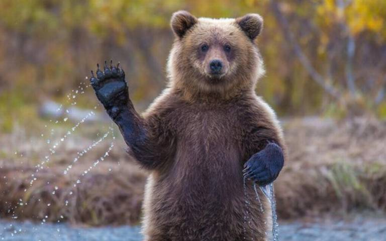

Oso Pardo
Los osos pardos habitan un paisaje humanizado, un mosaico de bosques, matorrales, pastos y pueblos habitados. Son fundamentalmente vegetarianos, aunque también consumen miel e insectos y en ocasiones carroñas.
Los osos pardos pueden variar de 3 a 9 pies (1-2,8 m) de largo desde la cabeza hasta la cola. Los machos pesan 300-700 libras (135-317 kg). En promedio, las mujeres pesan 10% menos que los hombres. El color de su pelaje puede variar de rubio a negro, pero por lo general son marrones con puntas grises o "canosas".
Masivos, veloces y excelentes cazadores, los osos pardos son depredadores agresivos que están listos para defender a sus crías. Los colosales osos pardos habitan en los bosques del norte, posicionándose como la especie de oso más común en el mundo. Pueden encontrarse en Asia, Europa y Norte América.
Localización de los Osos Pardos
| Región | Países | Hábitat |
|---|---|---|
| Eurasia | Rusia, Finlandia, Noruega, Suecia | Bosques, montañas, tundras |
| América del Norte | Estados Unidos (Alaska), Canadá, México | Bosques, montañas, praderas |
| América del Sur | Perú, Bolivia | Montañas, selvas nubladas |